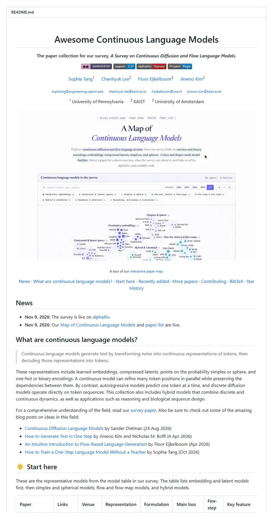
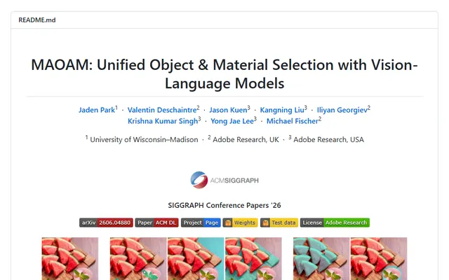
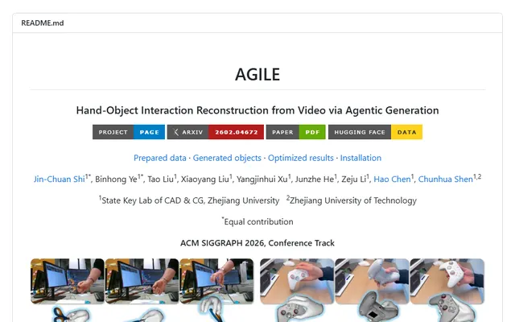
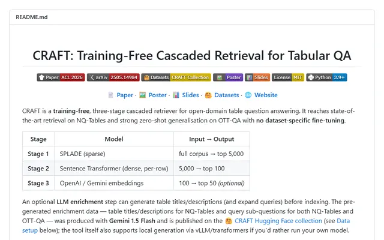
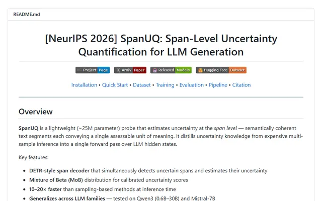
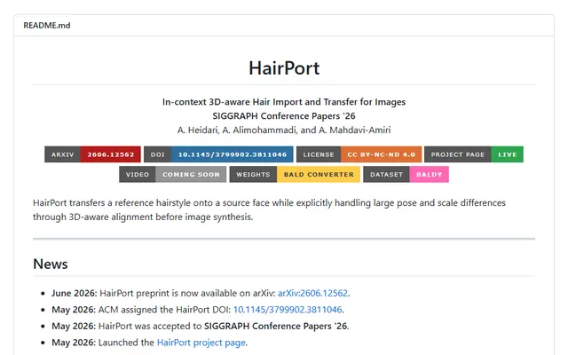
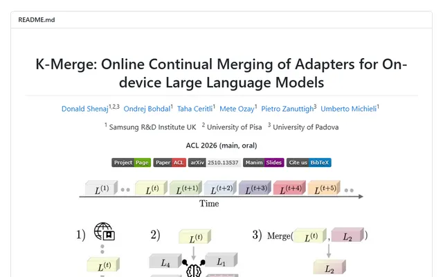

sophtang/Awesome-Continuous-Language-Models
一间综述阅览室，居中的刊头配四枚小标签和一段通栏的论文地图导览，下面是一张长对比表，再往下是按模型家族收好的八个合上的抽屉。

已对照实际渲染的页面核对。
入选理由
这一条不是通过设计评选轮次选进来的，而是按维护者的建议，和这篇综述的项目页一起加入。它是一个 awesome 列表，开头却像论文标题页，有作者、邮箱和通栏的论文地图录屏，随后把 137 篇论文整理成一张分类表和八个可折叠的家族表格。
下面的说明和 DESIGN.md 正文是英文。为了让编程 agent 读同一个版本，这部分没有翻译。
概述
头部区块
徽章配色
章节结构
使用建议
相似风格

adobe-research/obj-and-mat-selection
一页自带目录的会议论文集。居中一行加粗的人名，一枚小小的 ACM SIGGRAPH 徽章，六枚纤细的标签，以及一组西瓜和厨房照片，模型选中的部分被染成了蓝绿色。

Chuan-10/AGILE
强光下的一张实验台。五个字母的名字，一条粗重的大写标签，然后是一张样片，上面是握着剪刀、马克杯和手柄的一只只手。

coral-lab-asu/CRAFT
一本系着会议缎带的工具手册。一行居中的标题，一长条带 emoji 的徽章，一道点线分隔的链接栏，然后在第一行安装命令之前，用一张三行表格讲清了整个方法。

damon-demon/SpanUQ
一份盖着会议印章的命令行工具手册，带方括号的标题，四个小彩色标签，一条点线跳转栏，第一段还没结束数字就已出现。

deepmancer/HairPort
一篇排成新闻资料包的论文。一排醒目的大写字母标签，一份带日期的简报，每张编号图都像期刊页面那样配有图注，全部由粗灰色分隔线隔开。

donaldssh/K-Merge
一张钉在白墙上的会议标题幻灯片。居中的一个标题，低调的署名块，一小条灰色与彩色相间的标签，然后在任何文字出现之前，一张粉彩方块图已经讲完了故事。